Lesson 6 - Chi-squared test; Simple Linear Regression#
Topic: Chi-squared test; Simple Linear Regression
Chi-squared test#
Statistical Methods#
Broad division of statistical methods
Descriptive: Summarize and simplify the Information
Modeling: Create models to understand complex relations in the data
Inference: Evaluate the precision and generalize the results
The choice of descriptive and inferential methods depend: – Research question – Design type – Type of variable collected – Distributional assumptions
Descriptive Methods#
The Descriptive methods aim to summarize information.
Summary measures
Single Variable
Frequency: counts, percentage, rate, risk, odds, prevalence,incidence
Central tendency and position: mean, median, minimum, maximum,percentiles
Dispersion: standard deviation (variance), range (e.g. interquartilerange)
Two variables
Association: correlation, relative risk, odds ratio, hazard ratio, mean difference, risk difference
Agreement: kappa statistics, intraclass correlation, sensitivity, specificity, area under the ROC curve
Inference Methods#
With methods for inference we draw conclusions about the population using the sample results
Confidence intervals
Hypothesis Testing
Parametric: t-test, ANOVA
Non-parametric: Mann-Whitney, Wilcoxon…
Modeling Methods#
Typically, we use statistical models to describe the relation of one outcome (dependent variable) with multiple variables (covariates or independentvariables)
We refer to these methods as multivariablemethod (multivariaterefers to multiple outcomes and multiple covariates)
The choice of the model will depend: – Research question – Design type – Type of outcome – Distributional assumptions
Why do we care about modeling?
Descriptive - describe strength of the association between outcome and factors of interest eliminating “noise”
Adjustment - for covariates/confounders; e.g. compare mortality between hospitals adjusting for the patients’ case-mix
Predictors - to determine important risk factors affecting the outcome; e.g.identify risk factors associated with cardiovascular disease
Prediction - prognostic/diagnostic; e.g.severity scores (APACHE, SAPS; PRIMS,MPM,…)
Regression#
Regression analysis is a broad term for statistical models of the form g(Y)= f(X,β)
Where Y stands for the outcome (dependent) variable(s), X is vector of covariates, β is the vector of regression parameters, f is some function (known or unknown) and g is a known function.
Linear regression, logistic regression, Poisson regression, Cox regression
Simple Linear Regression#
Regression Line#
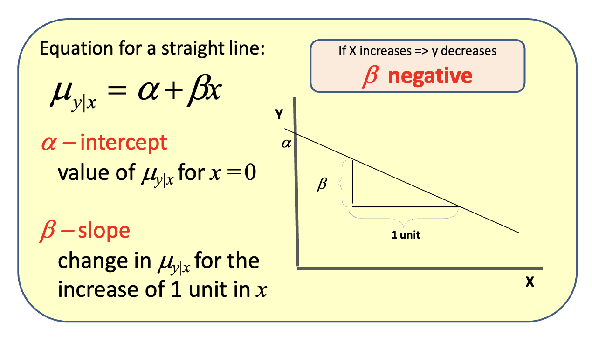 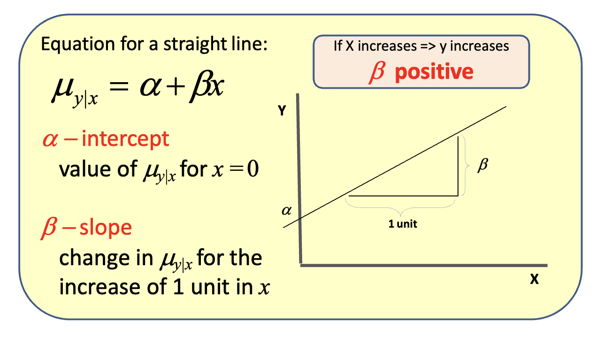 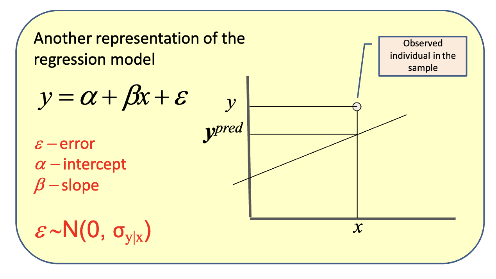 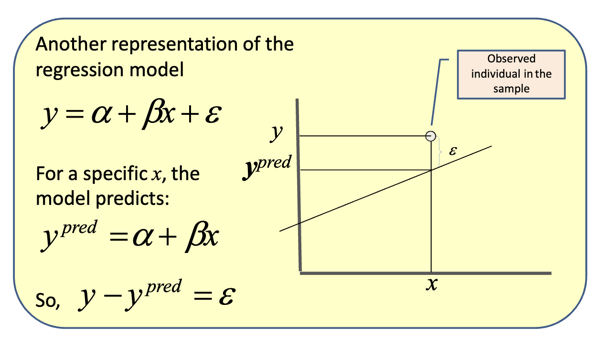
Least squares#
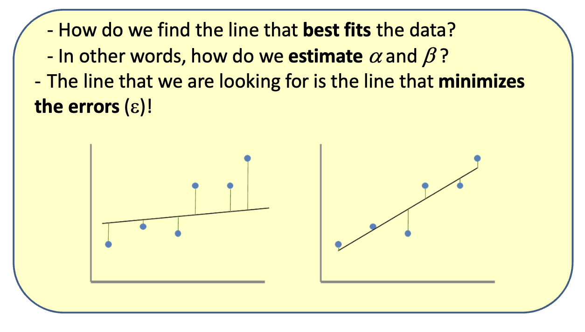
We have defined:
ε = y - y^predFor each observation (individual)
iwe have:ε_i = y_i - y^pred_i = y_i - α - βx_iThis represents the value of
xfor the individuali
The main idea is to minimize the sum of the squared errors
Sum of squares =
Σ (ε_i)^2 = Σ (y_i - α - βx_i)^2
The reason we square the errors is to “eliminate” the signs of the errors
To minimize the sum of squares we first find the zero of the first derivatives:
The derivative of the sum of squares with respect to α:
∂(sum of squares)/∂α = 0 <=> Σ -2(y_i - α - βx_i) = 0The derivative of the sum of squares with respect to β:
∂(sum of squares)/∂β = 0 <=> Σ -2x_i(y_i - α - βx_i) = 0
We can show that this solution is a minimum and it is known as the ordinary least squares estimator (OLS) for the regression parameters.
The OLS estimator is the best estimator under the following assumptions:
The association of x and y is linear, i.e., the model for the mean of y is correctly specified
The observations are independent
Fixing x, y is normally distributed (i.e.the errors,or residuals,are normally distributed)
Fixing x, the standard deviation for y is the same for all x’s (homoscedasticity)
Inference#
Note that α̂ and β̂ are estimators of the true α and β (population parameters) based on the sample
Usually, we want to make inference about β
The typical question after fitting the model is about the existence of a statistically significant “effect” of the covariate x on the outcome y
The “effect” of x on y is given by β
This corresponds to test the null hypothesis H0:β = 0 The observed data allow us to test this hypothesis.How?
We can show that the standard error of β̂ is given by:
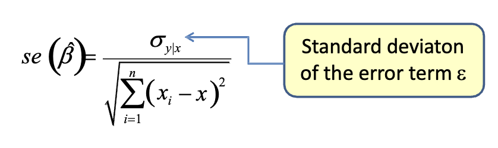
Typically, we do not know σyx but we can estimate se(β̂) using an estimator for σyx.
So, to test the null hypothesis H0: α=0 in the example
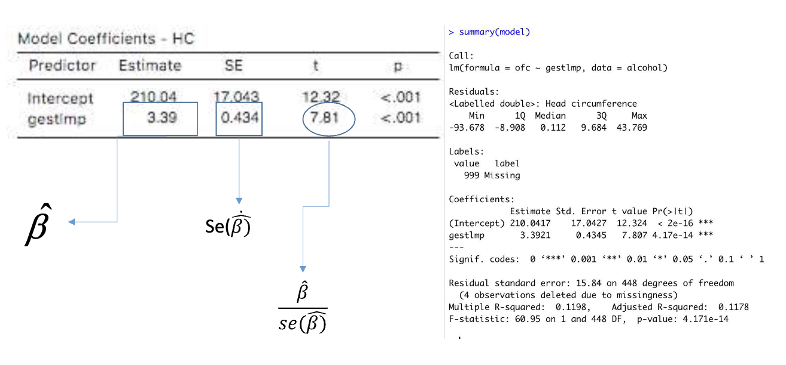
Having the standard error for the regression parameters estimates we can also compute a confidence interval (CI) for α and β.
The 95% confidence interval (CI) for β̂ is calculated as:
CI_95%(β̂) = β̂ ± 2 × se(β̂)
For the given estimates:
CI_95%(β̂) = 3.4 ± 2 × 0.4
Which simplifies to:
CI_95%(β̂) = [2.6; 4.2]
What about ( \hat{y}{pred} )? The predicted value for ( y ) (given the covariate ( x )) is based on the parameters estimates! So it is also an estimated value of the “true” ( y{pred} )
( \hat{y}_{pred} = \hat{\alpha} + \hat{\beta}x )
Therefore, it is also possible to construct a confidence interval for ( \hat{y}_{pred} )
However, we have to be specific about the meaning of ( y_{pred} )
Notice that if we want to estimate ( \mu_{y|x} ), the expression is the same but the meaning is different:
( \hat{\mu}_{y|x} = \hat{\alpha} + \hat{\beta}x )
( y_{pred} ) is the prediction of ( y ) for an individual that has a certain ( x )
( \mu_{y|x} ) is the average of ( y ) for individuals with a certain ( x )
The estimates for both quantities are the same but the confidence intervals are very different.
The reason for this has to do with the standard errors (se) of the estimates:
The standard error for the mean prediction is given by:
( se(\hat{\mu}{y|x}) = s{y|x} \sqrt{ \frac{1}{n} + \frac{(x - \bar{x})^2}{\sum_{i}(x_i - \bar{x})^2} } )
And the standard error for an individual prediction is:
( se(\hat{y}{pred}) = \sqrt{s^2{y|x} + se(\hat{\mu}_{y|x})} )
y_predis the prediction ofyfor an individual that has a certainxμ_y|xis the average ofyfor individuals with a certainxSince the confidence interval for both estimates depends on
x, we can plot the CI for “all”x’sThe intervals obtained are called the confidence bands
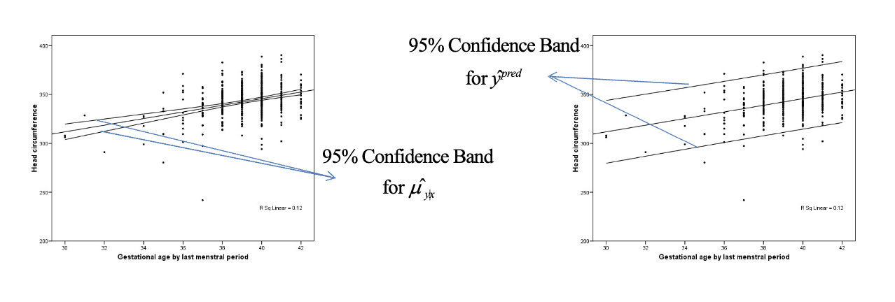
Model evaluation#
Assumptions#
Once we have the regression line, we should check
how well the model fits the data (goodness offit), and
the model assumptions:
The model for the mean is correctly specified
The distribution of the residuals is normally distributed – Or equivalently, y|x is normally distributed
Homoscedasticity
Equal variance of y for every x
Checking for Assumptions#
A common way of checking the model assumptions is to look at the residuals
The points should scatter around zero with no clear pattern and with similar dispersion.
Goodness of fit#
How well the model fits the data or
How well x predicts y or
How much of the variance of y is explained by x or
How good is the linear relation between x and y
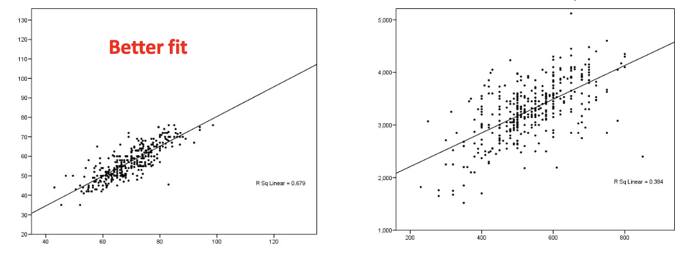
Pearson’s correlation (r): statistics that measures the linear relation between x and y
r^2 gives the amount of variation on y that is explained by x
Another way of deriving this statistics (r^2) is to write the ANOVA table
The variation of ( y ) can be expressed by the sum of squares of ( y )
Total sum of squares = ( \sum (y_i - \bar{y})^2 )
The total sum of squares can be decomposed as: ( \sum (y_i - \bar{y})^2 = \sum (y^{pred}_i - \bar{y})^2 + \sum (y_i - y^{pred}_i)^2 )
Total sum of squares = Explained sum of squares + Residual sum of squares
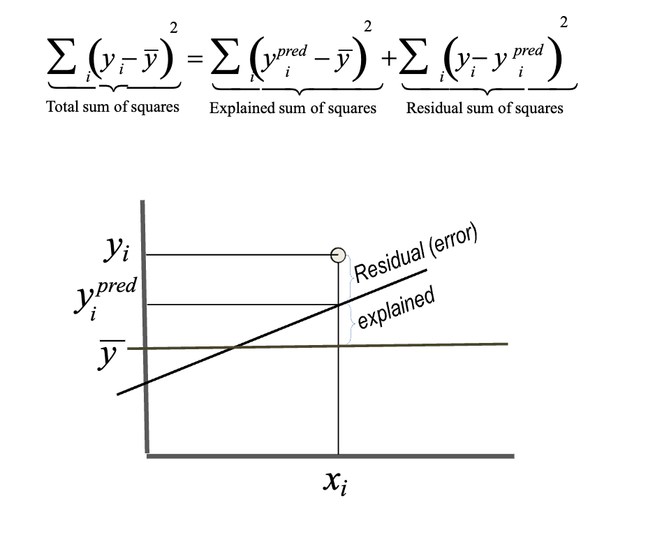
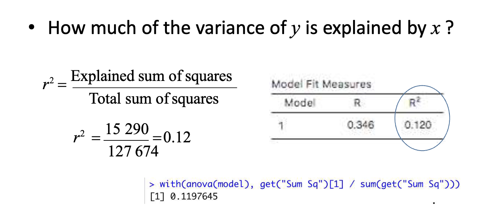
So, r^2 may be used as a mesure of goodness of fit
An inference question could be formulated regarding the sum squares:
Is the amount of variation explained by the model (explained sum of squares) significantly different from zero?
For the example, p<0.001 so we can conclude that the amount of variation explained by the model is significantly different from 0
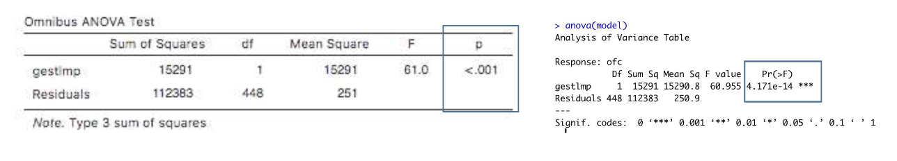
Note:
Intuitively the last question may seem related to a previous inference question about the statistically significant “effect” of the covariate x on the outcome y: H0: β=0
In fact both tests (testing β and testing the explained sum of squares) are equivalent for the case of simple linear regression
Summary of Interpretations and Concepts#
Assumptions:
The association of x and y is linear, i.e., the model for the mean of y is correctly specified
The observations are independent
Fixing x, y is normally distributed (i.e.the errors,or residuals,are normally distributed)
Fixing x, the standard deviation for y is the same for all x’s (homoscedasticity)
Pearson’s correlation (r): statistics that measures the linear relation between x and y
r^2 gives the amount of variation on y that is explained by x
Another way of deriving this statistics (r^2) is to write the ANOVA table
Total sum of squares = Explained sum of squares + Residual sum of squares
So, r^2 may be used as a mesure of goodness of fit
An inference question could be formulated regarding the sum squares:
Is the amount of variation explained by the model (explained sum of squares) significantly different from zero?
Intuitively the last question may seem related to a previous inference question about the statistically significant “effect” of the covariate x on the outcome y: H0: β=0
In fact both tests (testing β and testing the explained sum of squares) are equivalent for the case of simple linear regression